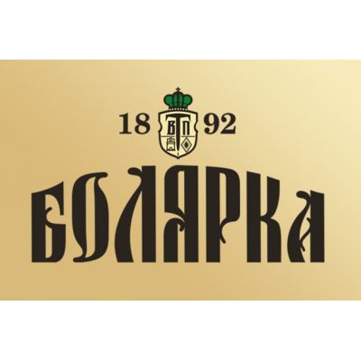
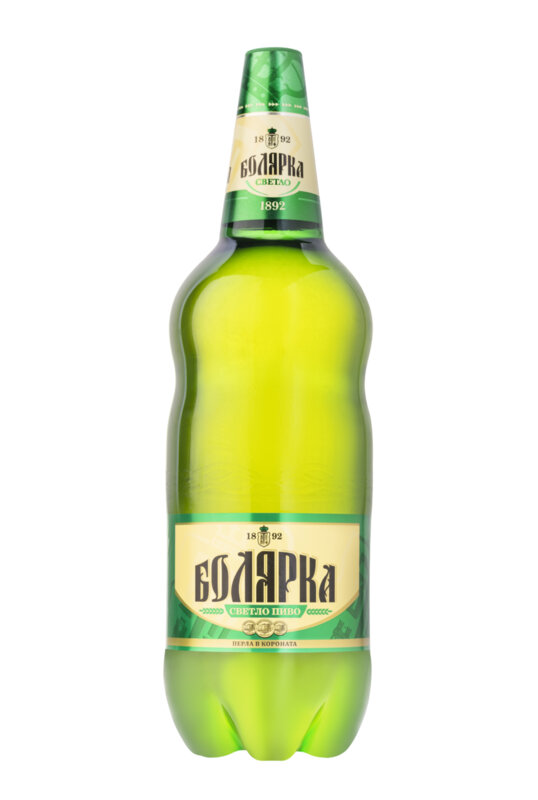

Болярка

| Вид пиво | Алкохолна стойност и градус | |
|---|---|---|
| „Болярка светло “ | 10° Р, Алкохолно съдържание. 4,3% Об | „Болярка тъмно “ | 11,7° Р. Алкохолно съдържание. 5,0% Об |
Начало на пивоварната индустрия във Велико Търново
Първата пивоварна фабрика във Велико Търново е открита през 1887 г. от германеца Артур Вилзер. През 1889 г. фабриката произвежда 130 000 оки пиво, от които 40 107 се пласират в окръга и страната. Използва се местен ечемик, а хмелът се доставя предимно от Австро-Унгария. Фабриката е закрита през 1896 г. През 1890 г. чехът Алоиз Дейрингер основава във Велико Търново втора пивоварна фабрика.